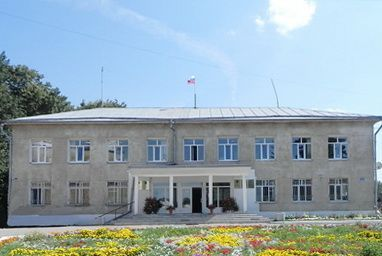

Государственные и муниципальные услуги

Администрация муниципального района
"ТАРУССКИЙ РАЙОН"
"ТАРУССКИЙ РАЙОН"
Проекты административных регламентов
Утвержденные административные регламенты
Документы личного хранения
(Ст. 7 ч.6 Федерального Закона от 27.07.2010 года «Об организации предоставления государственных и муниципальных услуг»):
- документы, удостоверяющие личность гражданина;
- документы воинского учёта;
- свидетельства о государственной регистрации актов гражданского состояния;
- документы, подтверждающие регистрацию по месту жительства/пребывания;
- водительские права;
- документы, подтверждающие прохождение техосмотра транспортного средства;
- документы на транспортное средство и его составные части, в том числе регистрационные документы;
- документы о трудовой деятельности, трудовом стаже и заработке гражданина, а также документы, оформленные по результатам расследования несчастного случая на производстве либо профессионального заболевания;
- документы об образовании/профессиональной квалификации, учёных степенях и званиях, другие документы об образовании;
- справки, заключения и иные документы системы здравоохранения;
- документы Архивного фонда РФ и другие архивные документы, переданные на постоянное хранение в государственные или муниципальные архивы;
- решения, приговоры, определения и постановления судов;
- учредительные документы юридического лица;
- решения, заключения и разрешения, выдаваемые органами опеки и попечительства;
- правоустанавливающие документы на объекты недвижимости, права на которые не зарегистрированы в Едином государственном реестре прав на недвижимое имущество и сделок с ним;
- документы, выдаваемые федеральными государственными учреждениями медико-социальной экспертизы;
- удостоверения и документы, подтверждающие право гражданина на получение социальной поддержки;
- документы о государственных и ведомственных наградах, государственных премиях и знаках отличия;
- первичные статистические данные, содержащиеся в формах федерального статистического наблюдения, предоставленных юридическими лицами или индивидуальными предпринимателями.
БЕЗ БУМАЖЕК
Отныне органам власти и местного самоуправления нельзя будет требовать от обратившихся граждан или представителей бизнеса информацию или документы, которые уже есть в распоряжении соответствующих учреждений и ведомств…
В настоящее время в России проходит масштабная реформа государственного управления. Ее результаты, которые коснутся буквально каждого гражданина, должны существенно упростить и сделать более комфортными контакты жителей страны с различными государственными учреждениями.
Речь идет о требованиях федерального закона № 210-ФЗ «Об организации предоставления государственных и муниципальных услуг», и в первую очередь – о положении, вступившем в силу с 1 июля 2012 года. В соответствии с ним, отныне органам власти и местного самоуправления нельзя будет требовать от обратившихся граждан или представителей бизнеса информацию или документы, которые уже есть в распоряжении соответствующих учреждений и ведомств. Это означает, что теперь гражданин, подавая какое-либо заявление в государственное учреждение, приносит с собой только свои личные документы и это заявление. Все остальные сведения запрашиваются чиновниками самостоятельно.
Понятно, что совсем избавиться от бумажного документооборота в ближайшее время не получится. Это не является особенностью Калужской области, такая ситуация характерна для страны в целом.
Что же конкретно теперь должен предоставлять гражданин, желающий воспользоваться госуслугами?
Для примера можно рассмотреть предоставление юридическим и физическим лицам в постоянное бессрочное пользование земельных участков. Для того, чтобы получить эту услугу, ранее было необходимо, помимо заявления и т.н. документов постоянного хранения (т.е. тех, что всегда находятся у гражданина), представить еще целый список документов. В том числе – выписки из Единого государственного реестра прав, Единого государственного реестра юридических лиц или аналогичного реестра индивидуальных предпринимателей, кадастровый паспорт земельного участка, кадастровую выписку об этом участке. Теперь все эти документы запрашивать и приносить самостоятельно не нужно - они должны быть запрошены и переданы по каналам межведомственного взаимодействия. Причем федеральным законом установлен четкий срок реакции на такие запросы – в большинстве случаев он составляет 5 дней.
Еще один пример – обращения граждан за назначением различных пособий. Для этого тоже приходилось собирать множество документов, включая справки о доходах, о пенсионных накоплениях. Теперь все это также будет передаваться в соответствующий государственный орган по каналам межведомственного взаимодействия.
Таким образом, практически в каждой из 67 региональных и 25 муниципальных услуг запрашивать документы в иных ведомствах органы власти теперь будут самостоятельно. Уникальной возможностью подачи заявлений на получение госуслуг в режиме онлайн, т.е. не отходя от своего компьютера, является единый портал Государственных услуг Российской Федерации - gosuslugi.ru. На этом портале предусмотрен простой порядок регистрации заявителя, после которой он получает уникальный комплект идентификационных данных, используемый далее для работы с порталом. Граждане, не имеющие возможности выхода в интернет со своего компьютера, могут зарегистрироваться на портале с помощью одного из 18 установленных в регионе инфоматов или в удостоверяющем центре Калужского филиала ОАО «Ростелеком». Вся процедура занимает не более 20 минут.
Конечно, в начальный период действия нового порядка представления госуслуг возможны разного рода нестыковки, а также недопонимание со стороны сотрудников ведомств, оказывающих эти услуги. На этот случай в каждом муниципальном образовании назначено ответственное должностное лицо – уполномоченный по организации межведомственного взаимодействия. В перспективе все взаимоотношения органов власти вообще не должны касаться заявителя. На это было нацелено внедрение принципа «одного окна», эту же цель преследует и внедрение новой системы предоставления госуслуг.
Если же гражданин сталкивается с явным нарушением его прав – необоснованным отказом в оказании услуги, нарушением сроков ее предоставления или требованием представить документы, не предусмотренные законодательством, - то он имеет право обратиться в орган, предоставляющий услугу, с жалобой по установленной форме. Руководитель этого органа власти обязан рассмотреть жалобу и принять по ней решение. Кстати, изменения, внесенные в Административный кодекс (статья 5.63), устанавливают ответственность должностных лиц за нарушения порядка предоставления услуг. Санкции предусмотрены вполне серьезные – денежные штрафы от 3 000 до 30 000 рублей.
Кроме того, начал работу интернет-сайт http://210.gosuslugi.ru, на котором любой гражданин может оставить свое заявление о незаконных требованиях о предоставлении им документов, относящихся к сфере межведомственного взаимодействия. Там же находится список тех документов, которые заявитель по-прежнему должен предоставлять самостоятельно – таких как паспорт гражданина, документы воинского учета, водительские права и т.п.
Дмитрий Разумовский, заместитель министра развития информационного общества и инноваций области.